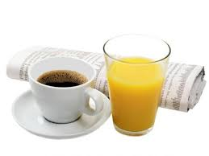

Chilaquiles verdes: tortillas de maíz cortadas en triángulos
fritas y bañadas de salsa roja o verde
Mini Hot Cakes: pan plano redondo dulce, cuya masa base contiene usualmente
leche, mantequilla, huevos, harina de trigo, levadura, azúcar, sal y esencia o
saborizantes
Bebida: Bebida: Café o jugo de naranja
PRECIO: $100